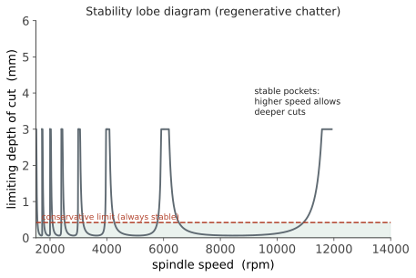

制造 II · 切削与精密加工
层次：本科核心 + 业界主力 ｜ 本页讲原理与限制，不给具体切削参数（须查刀具厂商推荐值与现场试切）。 切削是机械制造的主力工艺：它决定了零件精度的上限。本页讲切削的物理、机床精度的来源，以及机床工程中最经典的稳定性问题——颤振。
一、切削的物理
切屑形成：刀具挤压工件材料，使其在剪切面上发生剧烈塑性剪切而分离。
三个关键认识：
① 切削本质上是"受控的剪切破坏"，不是"切开"。剪切区的应变率极高（可达 \(10^3\)–\(10^5\) s⁻¹），应变极大。
② 能量几乎全部变成热。 三个热源：剪切区（主要）、刀-屑摩擦、刀-工件摩擦。大部分热被切屑带走（这是好事），但传入刀具的部分决定刀具寿命，传入工件的部分造成热变形与尺寸误差。
③ 切削力的三个分量：主切削力（决定功率）、进给力、背向力（决定工件与刀具的弹性变形，从而影响精度）。
刀具寿命——Taylor 公式：
\(n\) 通常在 0.1–0.3 之间，意味着切削速度对刀具寿命的影响极其敏感：速度提高 20%，寿命可能降低一半以上。这就是切削参数优化的核心矛盾——效率与刀具成本的权衡。
刀具磨损形式：后刀面磨损（正常，用 VB 值判定寿命）、月牙洼磨损（高温扩散）、崩刃、积屑瘤（中低速时的粘着，影响表面质量）。
二、精度从哪来
机床的精度直接决定零件的精度。误差来源：
| 来源 | 说明 | 对策 |
|---|---|---|
| 几何误差 | 导轨直线度、主轴回转误差、垂直度 | 精密制造、刮研、误差补偿 |
| 热变形 | 常是精密加工的首要误差源 | 恒温、热对称设计、冷却、热补偿 |
| 受力变形 | 切削力使刀具/工件弹性变形 | 提高刚度、减小切深、多次走刀 |
| 振动 | 强迫振动与颤振 | 见下节 |
| 刀具磨损 | 尺寸漂移 | 在线补偿、定期换刀 |
"热变形常是首要误差源" 值得强调：一台精密机床开机后需要预热数小时才能稳定；车间温度波动 1 °C 就可能让米级尺寸变化十几微米（承第十五页）。这就是精密加工必须在恒温车间进行的原因。
误差复映：工艺系统刚度有限时，毛坯的误差会部分复制到成品上（毛坯凸起处切削力大、让刀多、留下凸起）。多次走刀能逐步减小误差——这就是"粗加工—半精加工—精加工"分阶段的力学理由，而不只是习惯。
三、颤振：机床工程的经典难题
颤振是限制材料去除率的首要因素，也是第七页"自激振动"最重要的工程实例。
再生颤振的机理（这是一个漂亮的反馈失稳）：
- 刀具振动在工件表面留下波纹；
- 下一转（或下一齿）切削时，切削厚度随这个波纹变化；
- 切削厚度变化 → 切削力变化 → 激励刀具进一步振动；
- 若前后两转的波纹相位关系不利，能量持续注入 → 振动发散。
关键在"再生"二字：激励来自上一转留下的表面——这是一个带时滞的反馈回路（时滞 = 一转的时间）。🔗 自动化站第一、二页说过：时滞是反馈失稳的头号原因。颤振正是机械领域最典型的时滞失稳。

工程对策：
- 选择稳定叶瓣内的转速（需知道系统的模态参数——用第八页的实验模态分析测出来）；
- 提高系统刚度与阻尼（短而粗的刀具、减小悬伸、阻尼刀杆）；
- 变螺旋角/不等齿距刀具：打乱再生效应的相位关系；
- 主轴转速调制：连续微调转速，破坏相干性。
"叶瓣图"是机械与控制的交汇点——它本质上是一张稳定性边界图，与自动化站的稳定裕度是同一类东西。
四、精密与超精密加工
精度的量级阶梯（要有数量级感）：
- 普通加工：IT7–IT9，\(Ra\) 1.6–6.3 μm；
- 精密加工：IT5–IT6，\(Ra\) 0.2–0.8 μm（磨削、精镗）；
- 超精密加工：亚微米到纳米级，\(Ra\) < 0.01 μm。
超精密加工的关键技术：
- 单点金刚石车削（SPDT）：可直接车出光学级表面，用于红外光学、非球面透镜（🔗 光电站的光学元件制造）。但金刚石与铁族元素有化学亲和性，故不能直接车钢；
- 精密磨削与研磨抛光：适用于硬脆材料；
- 静压导轨与静压主轴（承第十二页）、空气轴承：无摩擦、无爬行、极高的运动精度；
- 环境控制：恒温、隔振（承第七页：低频隔振极难）、洁净。
特种加工（切削无能为力时）：
- 电火花（EDM）：靠放电蚀除，与材料硬度无关——可加工淬火钢、硬质合金；线切割可切复杂轮廓；
- 激光加工：非接触、热影响区小（🔗 光电站）；
- 电解、超声、水射流加工。
这些工艺的共同价值：突破了"刀具必须比工件硬"这一根本限制。
五、数控与工艺系统
数控（CNC）把运动轨迹变成程序：
- CAM 生成刀路 → 后处理 → G 代码 → 机床执行；
- 多轴联动（5 轴）可加工复杂曲面、减少装夹次数（承第十五页：减少装夹 = 减少误差累积）；
- 伺服系统的性能直接决定轮廓精度——🔗 自动化站第十二页：跟随误差、多轴同步、加加速度限制都在此体现。
"机床是一台被控机械"——它把本课的力学（刚度、振动、热变形）与自动化站的控制（伺服、插补、前馈）合在一起。这是两站最直接的交汇点。
六、要点
- 切削是受控的剪切破坏，能量几乎全变热；Taylor 公式中 \(n\) 很小 → 速度对刀具寿命极敏感；
- 热变形常是精密加工的首要误差源；误差复映解释了分阶段加工的必要性；
- 再生颤振是带时滞的反馈失稳——与控制理论同源；叶瓣图说明提高转速有时反而能加大切深；
- 超精密加工靠静压/空气轴承 + 环境控制；金刚石车削不能直接加工钢；
- 特种加工突破了"刀具须比工件硬"的限制；
- 机床是力学与控制的交汇点。
下一页：增材制造——它颠覆了"什么形状可行"这条约束，也带来了全新的设计自由与全新的问题。